Mobile navigation and shared app shell
The frame every screen sits in, redesigned for phones: one top bar, a navigation drawer, the project picker as a bottom sheet and quick search taking the whole screen. Above 900px nothing changes.
- In: the side menu, project picker, quick search, top bar (where you are, presence, Live), user menu, and the rules every page follows on a phone (toolbars, tabs, inputs, sheets, toasts, safe areas).
- Out: page bodies. Lists, boards and forms are SHIP-714 to SHIP-737, and they build on this. Instance settings stay desktop only.
- Where it lives: design/screens/shared.js and shiplean.css, so every reference screen gets the new frame under 900px. The rules are in design/README.md, “Touch shell (SHIP-713)”.
Today on a phone
The real app at 390 × 844 (iPhone 14 size), seeded local instance, built from main at 918cf067.
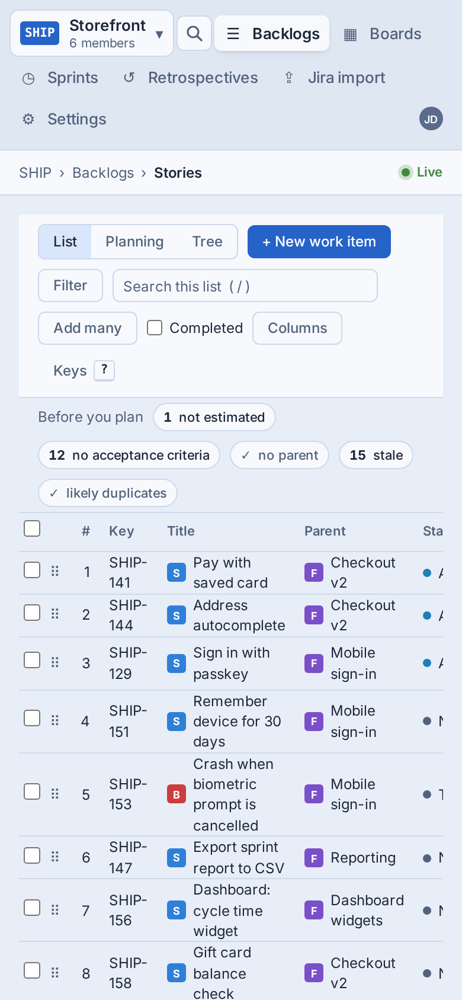
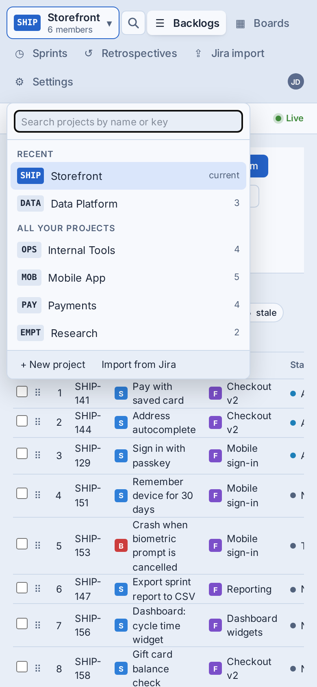
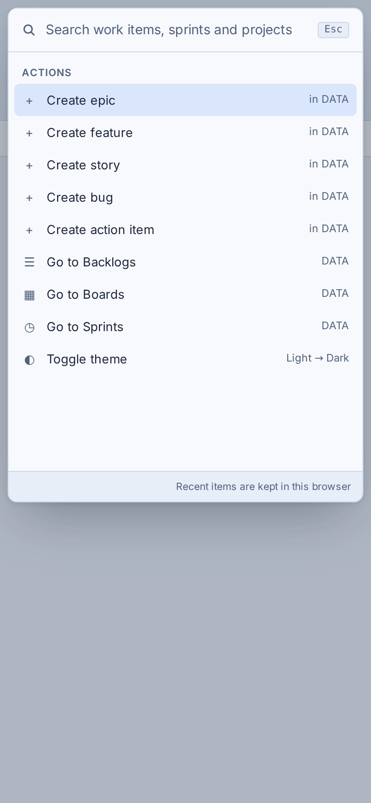
- 165px of frame before any contentThe menu strip wraps to three rows (about 125px) and the breadcrumb bar adds 38px. That is 20% of the screen, and it all scrolls away, so going somewhere else means scrolling back to the top.
- Epics, Features, the current sprint and the retro pages can't be reachedSub-items are hidden under 900px (NavItem.tsx:21, max-[900px]:hidden). Backlogs always opens Stories, Sprints always opens All sprints, and the toolbar has no level switch.
- Text fields zoom the page on iPhoneThe picker's search is 12px and quick search is 14px. iOS Safari zooms in on any field under 16px and doesn't zoom back out.
- Desktop affordances on a touch screen30px nav rows, an Esc key cap in quick search, and "Search this list ( / )" and Keys in the backlog toolbar.
- Two breakpoints that disagree by one pixelThe shell switches at max-[900px] and quick search at max-[899px], so at exactly 900px you get a strip menu with a desktop dialog.
- No safe areasThe viewport meta has no viewport-fit=cover and nothing uses env(safe-area-inset-*), so toasts and sheets can sit under the home indicator.
Proposed: try it
Pick a state to see it. To use it for real, open the live screen: it is the reference screen in ../screens/, so make the window narrower than 900px (or use the browser's device mode) and tap Menu, the project button, Search and the user.
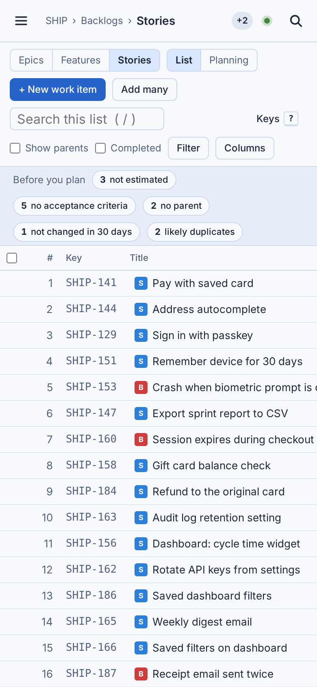
These are the reference screens with the new frame. The pages inside them (tables, boards) are still desktop layouts; their phone versions are the other SHIP-707 stories.
Every state, side by side
Swipe sideways. The theme switch at the top applies to all of them. screenshots.sh regenerates these images.
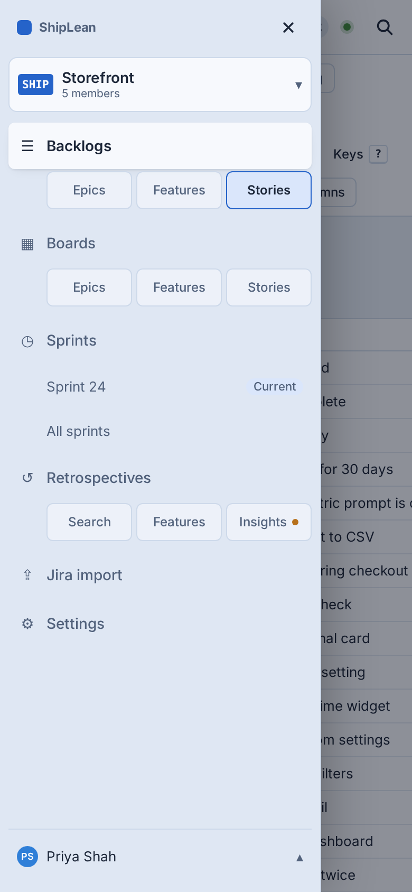
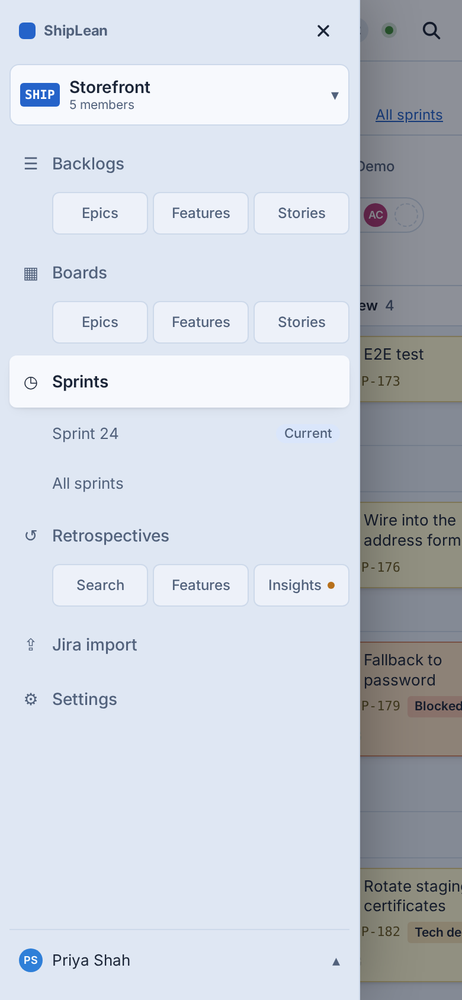
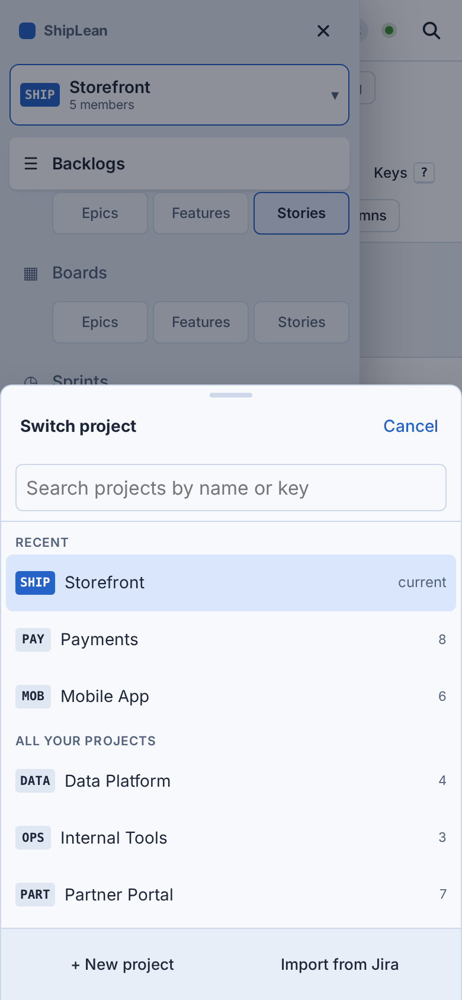
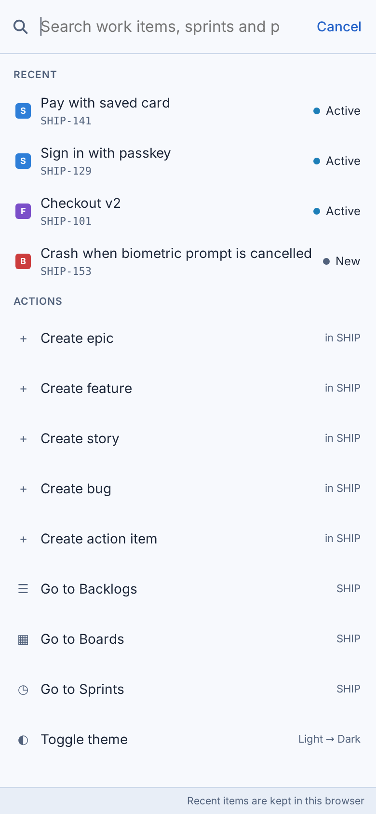
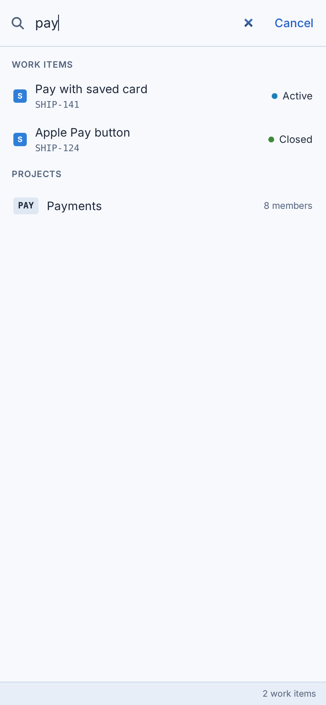
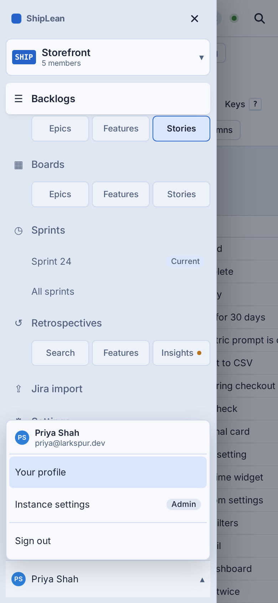
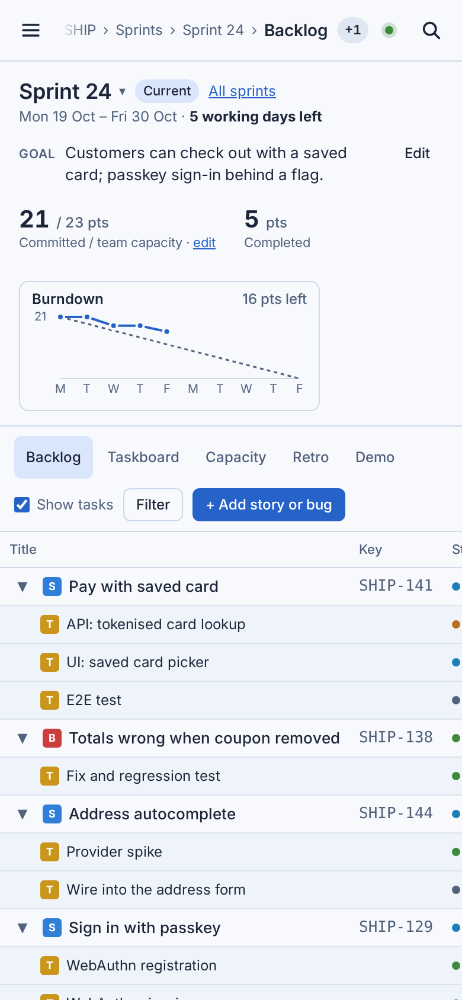
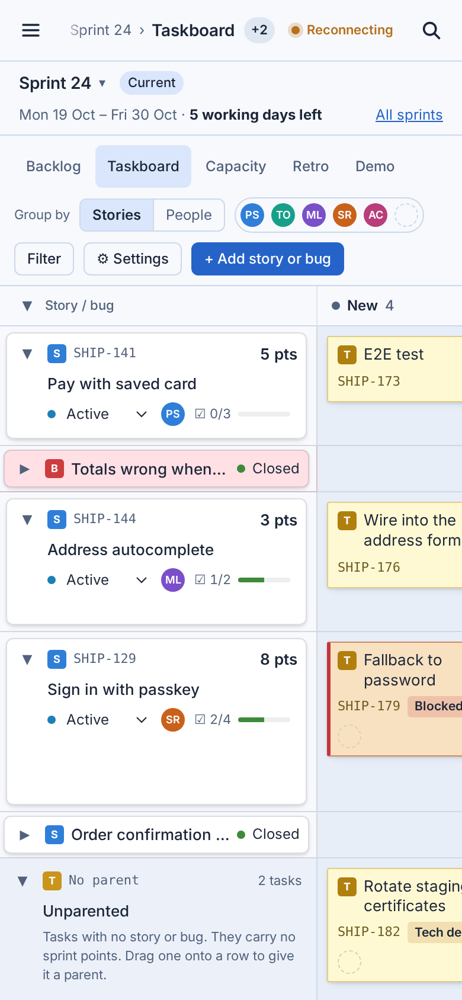
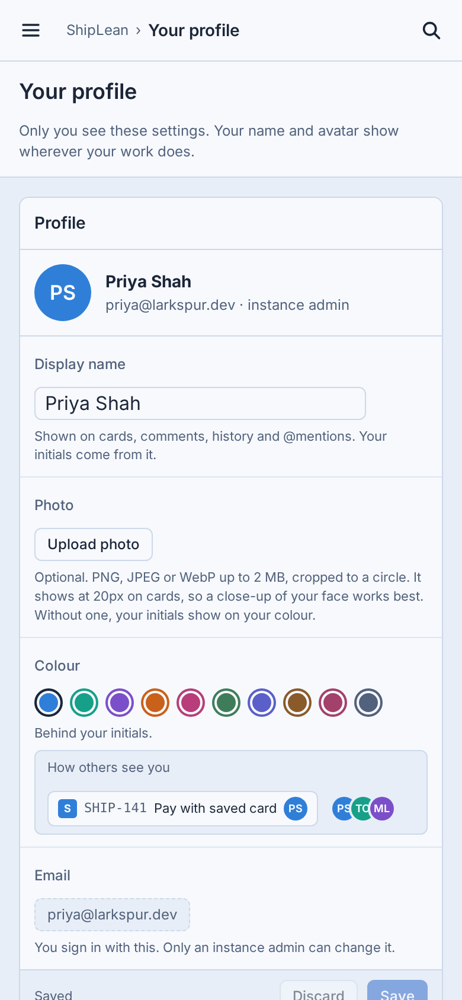
The top bar
52px under 900px (plus the notch), sticky. The page's own toolbar scrolls away under it.
- 1Menu 44 × 44. Opens the drawer and moves focus to its Close button; Esc, Close or the scrim closes it.
- 2Where you are The desktop breadcrumb on one line. When it doesn't fit, it is cut from the left behind a short fade, so the screen's name always shows (D4).
- 3Presence A count only, +2 for two other people (avatars stay on a desktop). Tapping lists everyone, as today (D6).
- 4Live The dot alone. Reconnecting shows the word, in the warn colour.
- 5Search Opens quick search full screen. It replaces the ⌘P chip, which means nothing without a keyboard.
Rules every page follows on a phone
The shell sets these once. The SHIP-714 to SHIP-737 page stories use them instead of each inventing their own. They'll go into design/README.md as “Touch shell patterns”.
| Rule | What | Why |
|---|---|---|
| One breakpoint: 900px | At 900px and below, the touch shell; above, the desktop shell. Quick search moves from 899 to 900 to match. | Phones and tablets in portrait get the same frame. One number to test. |
| Touch targets | Shell controls, drawer rows and sheet rows are at least --touch-target (44px). Secondary chips are at least 36px. Data rows keep the compact density. | Thumbs need the room on things you navigate with. Lists stay dense so you still see the backlog. |
| Inputs are 16px | Every text field, select and textarea uses --text-input-touch under 900px. | Below 16px, iOS Safari zooms the page on focus and stays zoomed. |
| Only the top bar sticks | Page toolbars, sprint headers and filter strips scroll with the page. | Two sticky bars would take 100px+ of a 844px screen. |
| Toolbars: one row | Keep the page's primary action and the one control people use most. Everything else goes in a ⋯ More bottom sheet. Filters get a Filter button with a count. Keyboard hints (/, Keys) are hidden on touch. | Today's backlog toolbar is four rows tall on a phone. |
| Tabs scroll sideways | The sprint tabs (Backlog, Taskboard, Capacity, Retro, Demo) stay on one row and scroll, 36px tall. | Wrapping tabs read as two separate groups. |
| Menus and dialogs become sheets | Pickers and menus open as bottom sheets with a grab bar and Cancel. Dialogs that hold a form open full screen. | Popovers anchored to small buttons land off-screen or under the thumb. |
| Safe areas | Add viewport-fit=cover; the top bar, drawer, sheets and toasts pad with env(safe-area-inset-*). | Notches and the home indicator. |
| No hover-only | Anything that shows only on hover (row actions, tooltips that hold information) needs a tap path. | There is no hover on a phone. |
| No swipe-to-open | The drawer opens from Menu only. | An edge swipe fights the browser's own back gesture on iOS and Android. |
Toolbar pattern, on the Stories backlog
The four-row toolbar becomes one row: + New, the List/Planning switch, Filter with a count, and ⋯. Add many, Show parents, Completed and Columns move into the More sheet. Search this list moves into Filter. SHIP-716 builds this page; the shell provides the sheet and the ⋯ button.
What the shell provides to page stories
- Sheet: grab bar, title, Cancel or Done, safe-area padding, focus trap, closes on scrim or Esc.
- More button (⋯) that opens a Sheet with a page's overflow controls.
- useTouchShell(): true at 900px and below, so a page doesn't hard-code its own width.
- Tokens: --touch-target, --mobile-bar-height, --drawer-width, --text-input-touch (added to tokens.css and tokens.json).
Navigation: drawer or bottom tabs
The one choice that shapes the rest. I recommend the drawer.
Drawer from a top bar Recommended
- Same menu as the desktop, so the model carries over and one component serves both
- Room for everything: 6 sections and 11 sub-pages, one tap from the drawer
- Boards and the Taskboard keep the full height
- Two taps to change section instead of one
- The menu is out of sight until you open it
Bottom tab bar
- One tap between the four main sections, in thumb reach
- Familiar from native apps
- Another 54px plus the home indicator, on every screen, boards included
- Sub-pages still need a second control on each page (level switch, sprint tabs)
- Jira import, Settings and the project picker hide under More
- Two navigation models to build and test, desktop and phone
How we'll know it worked
Analytics are server-side (docs/analytics.md), so the drawer opening isn't visible to them, but every screen view is. Proposal: add a viewport property to screen.viewed (phone under 600px, tablet up to 900px, desktop above), sent by the SPA with the screen it already reports.
- Reach: phone screen views per week as a share of all screen views, for the 4 weeks before release against the 4 weeks after.
- Depth: distinct screens per phone visit, against desktop visits in the same weeks. Today a phone visit can't reach Epics, Features or the retro pages, so this should rise.
- Sub-pages: phone views of Epics and Features backlogs and boards, the current sprint and Retrospectives › Insights per week. They are near zero now because there's no way to reach them.
Decisions
Settled by Joel on 7 Nov 2026: eight recommendations kept, two changed. The screens and images show the settled answers.
| # | Question | Answer | |
|---|---|---|---|
| D1 | Navigation on phones | A drawer from a top-bar Menu button | As recommended |
| D2 | Where the touch shell starts | 900px and below: phones and portrait tablets | As recommended |
| D3 | Sub-pages in the drawer | Always shown for every section | As recommended |
| D4 | Where you are, in the top bar | The breadcrumb on one line, cut from the left | Changed: recommended two lines |
| D5 | Quick search on a phone | The whole screen, with Cancel | As recommended |
| D6 | Presence and Live on a phone | A count only (+3); Live as a dot, Reconnecting as a word | Changed: recommended two avatars then +n |
| D7 | What sticks while scrolling | The top bar only; page toolbars scroll away | As recommended |
| D8 | Density on phones | Shell controls 44px; data rows stay compact | As recommended |
| D9 | Page toolbars | One shared pattern: one row, Filter, ⋯ More sheet | As recommended |
| D10 | Measuring it | A viewport property (phone, tablet, desktop) on screen.viewed | As recommended |